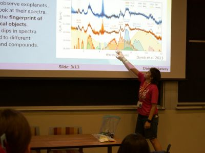
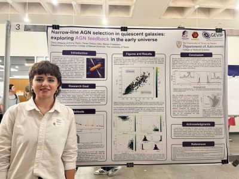
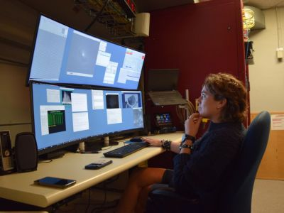
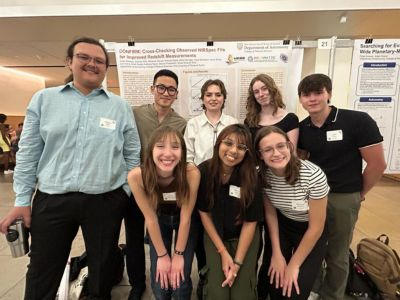
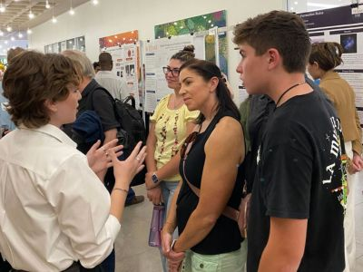
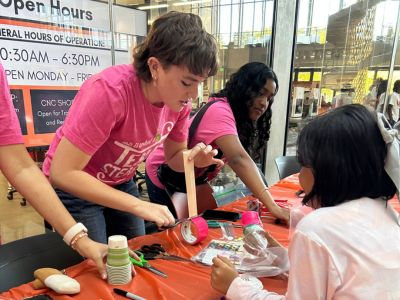
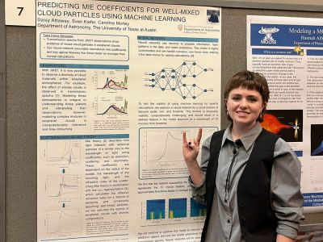
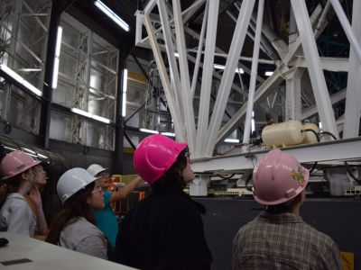

About Me
I'm Daisy Attaway, a senior undergraduate at UT Austin. I am passionate about supermassive black holes, their host galaxies, and star formation regulation. Get in touch:
I'm Daisy Attaway, a senior undergraduate at UT Austin. I am passionate about supermassive black holes, their host galaxies, and star formation regulation. Get in touch:
I am studying active galactic nuclei (AGN), or accreting black holes. I use JWST to analyze these objects and their effect on their host galaxies' star formation. I have also done research in modeling mixed cloud particles in exoplanet atmospheres.
I love sharing the wonder of astronomy and STEM with people through outreach events and talks. I am also passionate about mentorship in research and STEM education and have served in a variety of related positions.
In my (limited) free time, I am an amateur ballroom dancer and enjoy photography. My other hobbies include various crafts, hiking, and riding my motorcycle.







